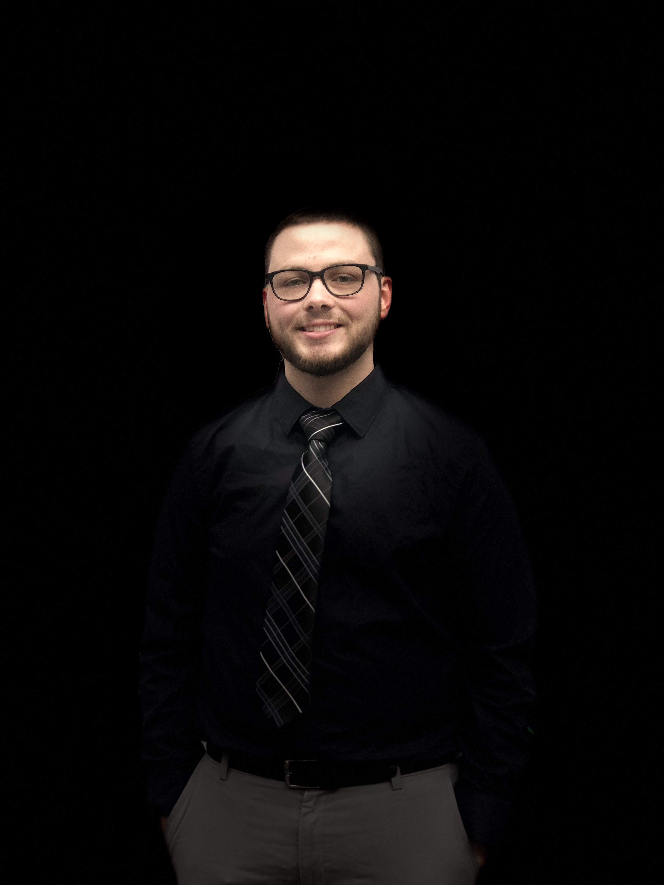

<div class="about-me-grid">
        <!--  -->
    <div class="grid-item-intro">
        <a class="name">JOSHUA ANDERSON</a>
    <p>It all began when I was just a young lad. My father introduced me to the world of technology through video games. My passion for technology ignited with one of the most popular games of the 90s: Super Mario World. As I progressed through life, I gained access to one of the standout online games of the century, Runescape. It was in Runescape that I discovered my love for programming in Java, during the challenging days of high school.</p>

    <p>After graduating from Clear Lake High School, I enrolled at the University of Houston - Clear Lake to pursue a degree in Computer Engineering. I chose Computer Engineering over Computer Science because I was curious about how programming languages interacted with electronics. This path allowed me to delve into various programming languages including C, C#, Java, VHDL, and Assembly. Additionally, I delved into C++ during my free time, navigating the vast ocean of YouTube.</p>

    <p>Beyond programming, I delved into Computer Architecture, Digital Circuit Design, Linear Circuits, and Systems Engineering. In my final year, I joined a small team of five engineering students for a senior project. Our task was to develop an automatic treadmill that adjusted its speed based on the user's heart rate, aptly named the <a [routerLink]="['/project','2']">Smart Treadmill</a>. This project integrated software and hardware, following the principles of Dr. Phil Maffetone's heart rate methodology, where the desired heart rate is 180 minus your age.</p>

    <p>The Smart Treadmill project received acclaim from both the Engineering faculty and fellow students. After graduation, I endeavored to enhance my expertise in C# by creating an application to automate gameplay in a video game. I dubbed this creation "<a [routerLink]="['/project','1']">The Automated Game Player</a>." While I achieved the initial set of functionalities, I continue to revisit the project periodically, incorporating new methods, features, and improvements to the user interface and experience.</p>

    <p>Shortly thereafter, I was approached by a staffing company named Cognixia. I became a part of Cognixia's JUMPlus program, with a primary focus on Full-Stack Web Development training. The curriculum encompassed programming languages like Java and JavaScript, as well as frameworks such as Spring, Springboot, React, and Angular. My training at Cognixia also encompassed working with databases like MySQL and MongoDB, alongside cloud services including Amazon Web Services' EC2 Instances and S3 Buckets.</p>

    <p>During my tenure at Cognixia, I contributed to mock E-Commerce and Banking Applications, exemplified by projects like <a [routerLink]="['/project','3']">Dollars Bank</a> and <a [routerLink]="['/project','4']">Core Java Shopping App</a>. Upon the conclusion of my contract with Cognixia, I embarked on a mission to construct this portfolio website to showcase my accomplishments.</p>
    
    <p>Not long after the launch of this portfolio, I found myself joining Ascendion as an Associate Engineer, a role in which I've garnered multiple awards for consistently exceeding expectations. Within the initial two years, my dedication and performance led to a well-deserved promotion to Senior Associate Engineer. Concurrently, during my leisure hours, I'm ardently pursuing my aspiration of becoming a game developer by actively developing my very own MMO. To bring this dream to life, I'm harnessing the power of C++, C#, and Unity, weaving these technologies together into the intricate tapestry of my MMO's creation.</p>
    
</div>
